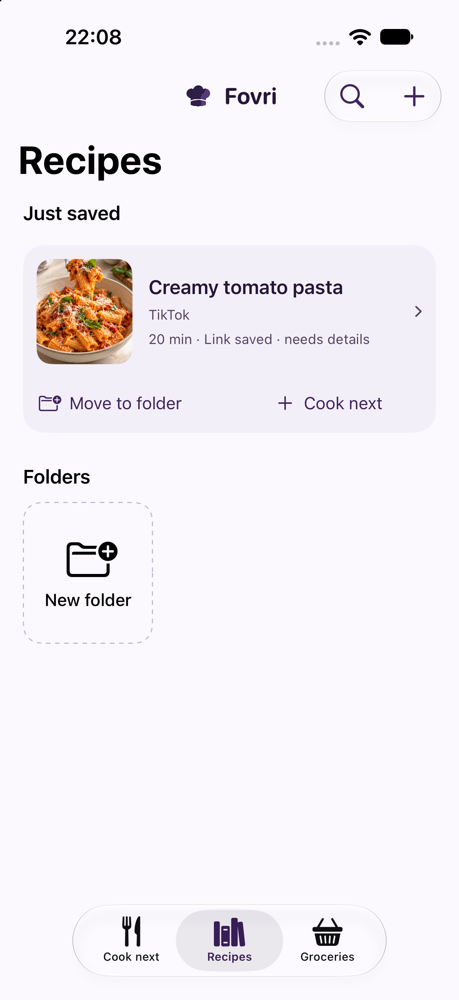
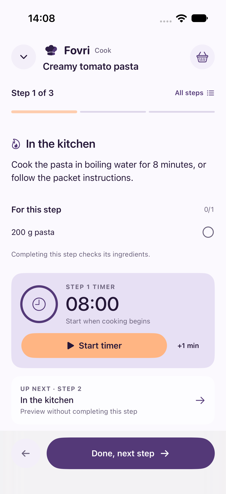

Keep tonight’s answer ready.
Cook next holds the meals you are genuinely planning to make.

 fovri
fovriSOCIAL RECIPE KEEPER · MEAL PLANNER · COOKING GUIDE
Turn cooking videos and recipe links into an editable cookbook—then decide what is next, shop for it and cook without returning to your feed.

01 / THE RECIPE AFTER THE SCROLL
Fovri gives the meals you actually want to make a quieter home: searchable, editable and ready when hunger replaces inspiration.
02 / SAVE
Share a public recipe link to Fovri or paste it in the app. Fovri gathers available source details into an editable recipe and keeps the original within reach.

03 / PLAN
Move a recipe into Cook next, scale it for the table and bring what is missing into one grocery list.
Cook next holds the meals you are genuinely planning to make.
Turn planned meals into a checkable grocery list.

Change servings and adjust supported ingredient quantities.

04 / COOK
Follow the method without pinching and scrolling through a long page. Each step keeps relevant ingredients nearby, supports timers and previews what comes next.
05 / KEEP
Search by recipe or ingredient, collect favorites, organize with folders and keep a backup you control. Your cookbook is stored on your iPhone rather than in a public profile.
KITCHEN GUIDES
Ten practical guides for choosing a recipe organizer, building a digital cookbook, planning meals and saving recipes from TikTok or Instagram.
Browse all 10 guides →06 / HONEST BY DESIGN
Saved recipes, meal plans, grocery information, drafts and photos live in local app storage.
Fovri contacts the source and can use optional cloud assistance to recover recipe details.
Check allergens, temperatures, quantities and safe handling yourself.
07 / FOVRI PRO
After onboarding, Fovri requires an active Fovri Pro subscription. Choose monthly or yearly access; eligible new yearly subscribers can receive the introductory trial shown in the app.
Local prices, eligibility, renewal and cancellation terms are shown before purchase.
FOVRI PRO08 / BEFORE YOU COOK
Fovri accepts public links and shared content from TikTok, Instagram, YouTube and recipe websites. Results depend on what each source makes available.
Yes. The source stays attached so you can return to it. Only import content you are entitled to access and use.
Your cookbook, meal plans, groceries, drafts and saved photos are stored locally on your iPhone.
Fovri includes onboarding, then requires Fovri Pro. Monthly access is billed immediately. Eligible new subscribers may receive a 14-day trial with the yearly option.
No. Cancelling or expiry locks app access but does not delete local cookbook data.
THE NEXT GOOD MEAL STARTS WITH ONE SAVED IDEA